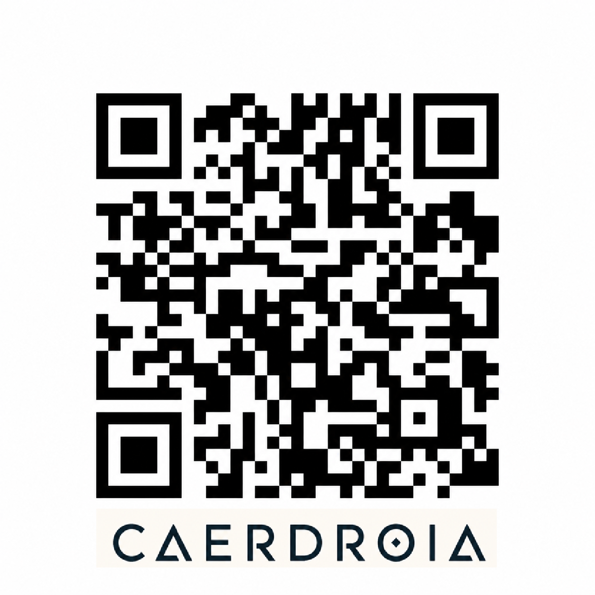

CAERDROIA
FR Outils métier, outils gratuits et projets accessibles pour travailler, créer, traduire et alléger la charge cognitive.
EN Professional tools, free tools and accessible projects for work, creation, translation and cognitive load reduction.

Scannez pour accéder aux outils Caerdroia / Scan to access Caerdroia tools